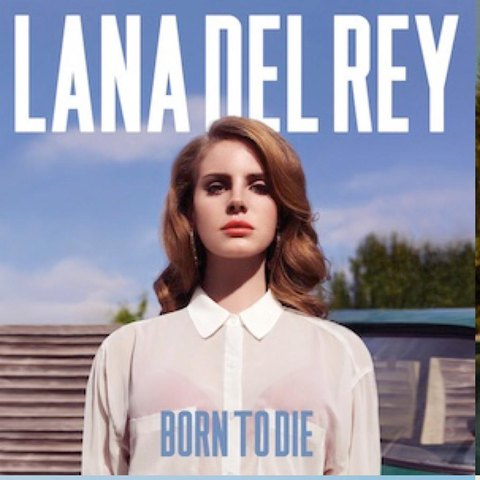
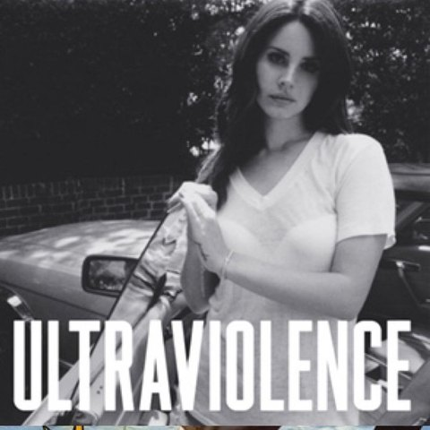
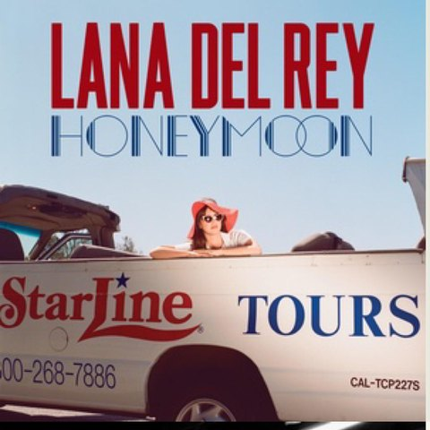
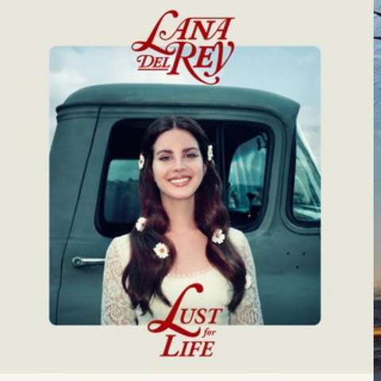
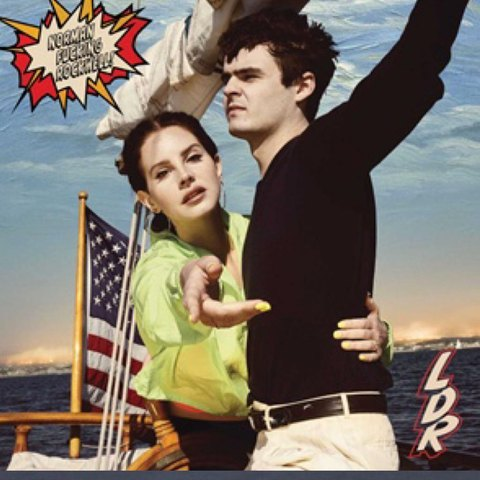
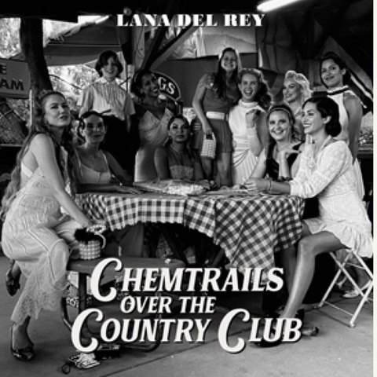
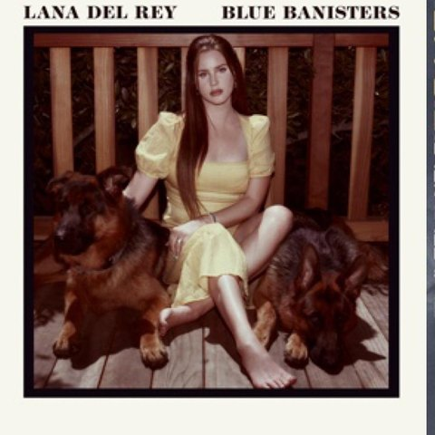
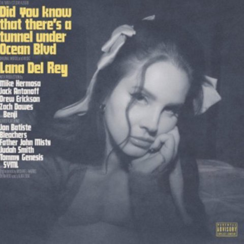

The Albums
All of her albums as of 2026
- 2010Withdrawn
Lana Del Ray
5 Points Records
Her first album, released under an earlier spelling of her name and withdrawn within months. It is no longer available on streaming services.
- 2012

Born to Die
Interscope · Polydor
Her major-label debut, which reached No. 2 in the US and No. 1 in the UK.
Key songs — Video Games, Blue Jeans, Summertime Sadness
Listen on Spotify ↗ - 2014

Ultraviolence
Produced with Dan Auerbach
A darker, guitar-led record. It was her first No. 1 album in the US.
Key songs — West Coast, Brooklyn Baby
Listen on Spotify ↗ - 2015

Honeymoon
Interscope · Polydor
- 2017

Lust for Life
Interscope · Polydor
Her first album with guest artists, including The Weeknd and Stevie Nicks. It reached No. 1 in the US.
Key songs — Love, Lust for Life
Listen on Spotify ↗ - 2019

Norman Fucking Rockwell!
Produced with Jack Antonoff
Her most acclaimed album, it was nominated for the Grammy for Album of the Year and is on Rolling Stone’s list of the 500 greatest albums.
Key songs — Mariners Apartment Complex, Venice Bitch
Listen on Spotify ↗ - 2021

Chemtrails over the Country Club
Produced with Jack Antonoff
A quieter album that is more folk.
Key songs — White Dress, Chemtrails over the Country Club
Listen on Spotify ↗ - 2021

Blue Banisters
Interscope · Polydor
Released after Chemtrails, it mixes new songs with older unreleased ones.
Key songs — Text Book, Arcadia
Listen on Spotify ↗ - 2023

Did You Know That There’s a Tunnel Under Ocean Blvd
Interscope · Polydor
A longer album about family and faith. It received two Grammy nominations, including Album of the Year.
Key songs — A&W, The Grants
Listen on Spotify ↗ - TBANo cover yet
Stove
Forthcoming
A country-influenced album, announced earlier as Lasso. It has no release date yet.
Released so far — Henry, come on; Bluebird; White Feather Hawk Tail Deer Hunter
Hear the singles on Spotify ↗